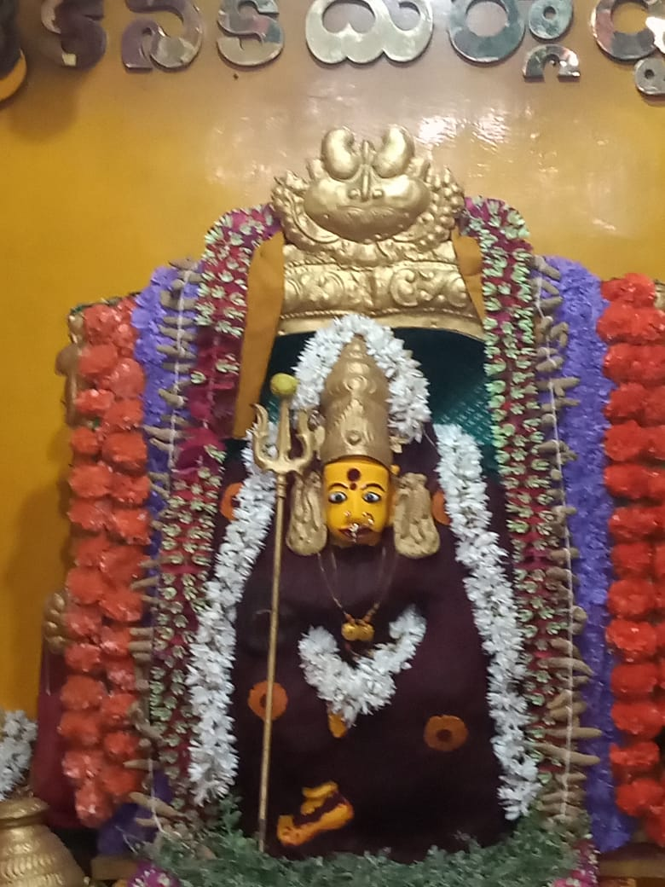

श्रीकनकदुर्गादेवीमन्दिरं दुर्गादेव्याः पूजायै हिन्दुधर्मप्रचाराय च समर्पितम्। विजयवाडानगरे रामराज्यनगरे स्थितम् अस्माकं मन्दिरं भक्तानां दिव्याशीर्वादशान्तिसमृद्ध्यर्थम् आध्यात्मिककेन्द्रम् अस्ति।
वयं सम्पूर्णवर्षं नित्यपूजाः विशेषार्चनाः महोत्सवांश्च आयोजयामः, भक्त्या उत्सवेन च समाजम् एकीकुर्मः।
पञ्चविंशतिवर्षेभ्यः पूर्वं स्थापितं मन्दिरम् एकं सजीवम् आध्यात्मिककेन्द्रं जातम्, प्रदेशात् सहस्रशः भक्तान् आकर्षयति।
